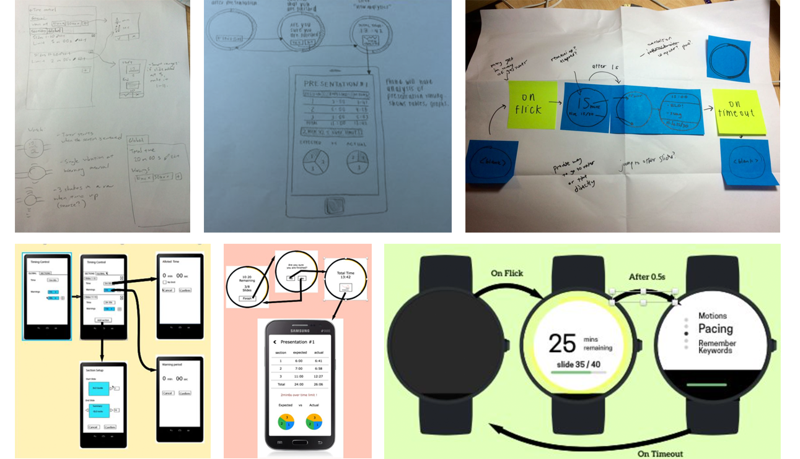
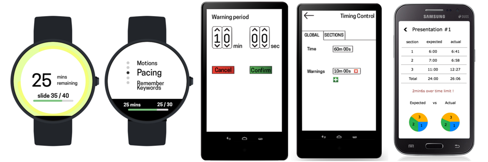
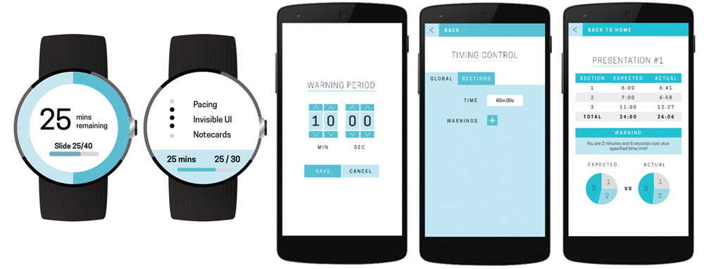
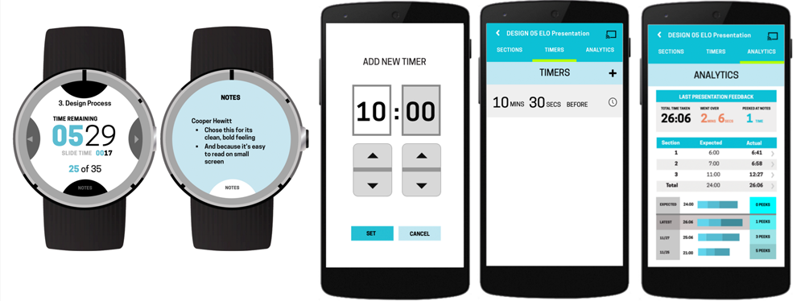
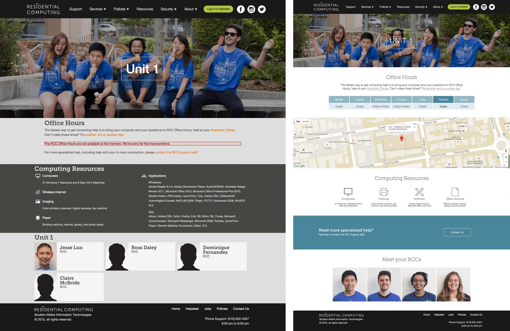
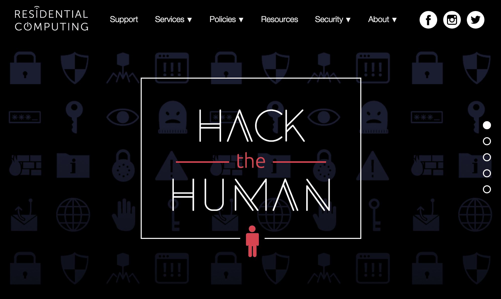
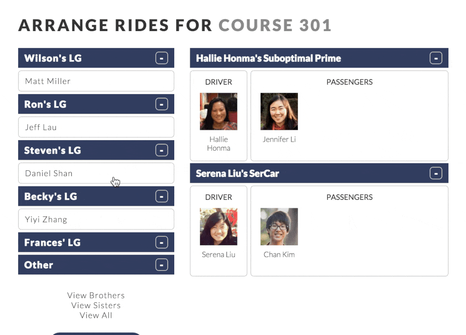
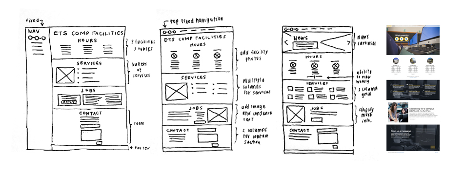
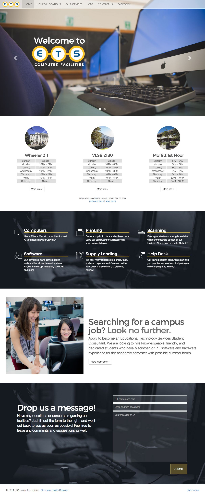

UI/UX Design Java Android Mobile Wear
ELO is an Android application that facilitates public speakers with their presentations through nonintrusive alerts and keywords by smartwatch and provides presentation analytics to their mobile device.
View SourceIn CS160, a UC Berkeley course that teaches the principles of UI and UX design, our final class project was to work in a team of five students to create an Android application that utilizes both a mobile and wear platform.
In traditional presentations, it can be difficult to pace oneself, change slides, etc. while remaining mobile and engaged with the audience. ELO aims to solve that by putting presentation aids onto a smartwatch, so presenters can receive timing alerts and advance slides with minimal break in their overall flow. In addition, the app contains an array of practice tools to help presenters adjust and practice their timing, divide the presentation into sections, and rely less on written notes.
Before committing our ideas to Sketch and Illustrator, we drew wireframes in pencil and paper to map out the interaction and figure out the rudimentary layout design. These pencil and paper sketches proved a very quick way to communicate our ideas and discuss the overall design of the application.
Our first screens were pretty disorganized, as we didn’t coordinate to establish a unified visual design scheme.
Later, we updated our design to establish a consistent visual identity for ELO. We did this by designing a bluebased color scheme and using consistent typography.
After contextual inquiries, many user studies, and feedback from our course staff, we decided to redesign ELO as a practice-focused app. We learned that what presenters cared most about was pacing. So redesigning ELO as a practice app to help presenters practice seemed like a great idea, and the following design iterations reflect that change of focus.
To do this, we redesigned the watch screen so that timing was the most important feature, and moved the notes screen to a quasimode, so we could track how many times presenters peeked at their notes. We also restructured the analytics page to feature presentation analytics from previous practice runs, and also added in section-by-section breakdowns of pacing for finer-granularity analytics. Finally, we restructured the navigation into tab views to make it easier to switch between the analytics, timers, and sections screens for the same presentation.
Over the semester, our designs matured and the scope of our project morphed into the specific vision we had: that speakers can use our app not only to handle the technical side of presentations, but to freely engage and connect with their audiences as well.
Front-end AngularJS SCSS Node.js Gulp.js
CalCentral is UC Berkeley's new online portal providing a unified and personalized one-stop way to access your UC Berkeley email, calendar, shared documents and class collaboration spaces, as well as links to key campus services and resources. As a Full Stack Developer, I focus on implementing the design of widgets using AngularJS and SCSS.
CalCentral is an open source project. See my contributions to the repository here.
View VideoStarting work as a Full Stack Developer at CalCentral has definitely been a great experience as it's the first time working on an application that serves over thousands of people. Since day one, it's amazing how much I learned about developing for a large-scale application and, more specifically, about JavaScript and how it plays into the front-end aspects of an app.
At work, I focus on implementing the designs of widget from the UX Team using AngularJS, Node.js, and SCSS. It's often a challenge to get these tasks done because UC Berkeley doesn't formally teach JavaScript, but my mentor at work, a front-end master, never ceases to find a solution to my problems. I would love to show some screenshots of the things I worked on, but most of the features aren't live yet ... so we'll have to wait until then!
Other than implementing widgets, I was also given the hefty task of changing the front-end structure of CalCentral by implementing Browserify, which was challenging because the former structure was already deeply established. In addition, I also implemented some front-end tools, such as Browsersync. Along the way, I became acquainted to Gulp.js, the build system that CalCentral is using that is used widely in industry, and Node.js. Learning about these tools and build systems really changed the way I develop. Even as I made this website, I couldn't help but to use Gulp, Node, and Browsersync.
Stay tuned for updates!
HTML SCSS JavaScript PHP UI Design Branding
Residential Computing supports broadband, reliable network connections throughout the residence halls and campus apartments in UC Berkeley, including wireless connectivity in dining facilities and many other common spaces. As the web designer, I design the layout of new pages and implement them.
View WebsiteComing into ResComp less than a year ago, it was my first time working on a website that had so much content spread over so many pages. The Marketing team had already started to transform the ResComp brand into something new and modern, and that meant a lot of redesigning outdated pages.
The first project I took on was redesigning some of the team pages, which were pretty out-of-date and old-fashioned. The ResComp website originally had an interesting color scheme (dark grey, orange, green), and our team decided to take a step in a different direction proposing colors that would be cleaner and simpler (white and blue). After several iterations of mock-ups on Illustrator, I got working, and we were pretty pleased with the result. Before and after shots below.
Similarly, with the help of Anna, ResComp's Graphic Designer, I also redesigned some core pages, such as the jobs page and job position page, with the same style branding.
In addition, I attribute a lot of my current CSS knowledge to my time at ResComp. Often times, my team would come up with different visual effects to make the site more interactive and user-friendly, and, as a result, I would have to research online and view tutorials to implement them. Check out some of the effects implemented purely with CSS down below!
Finally, the last project I would like to mention is Hack the Human. Every year in October, ResComp partipcates in Cyber Security month by producing some kind of marketing material to spread awareness, and this year, I was given the responsibility to design and implement this website along with Anna. Though the website didn't follow our branding guide, it was fun to think outside of the box to create an unconventional website.
Overall, my time in ResComp has definitely been an enriching experience to bolster my web developing skills and ability to maintain a large-scale website. In the future, I plan to create a new style guide for the website that goes with our new branding, so stay tuned for updates about that!
Ruby on Rails jQuery UI JavaScript SCSS UI Design
KoinRides is a Rails application that allows administrators to centralize management of cars, events, and students, communicate with students about rides, and organize rides with a user-friendly UI. Working in a team of six, I focused on the UI design and front-end aspects of the application.
The source code of the application can be found here.
View ApplicationIn CS169, a UC Berkeley course that teaches the principles of software engineering, our final class project was to work in a team of six students to create a Rails application using agile methodologies for a non-profit organization.
Our client has the job of organizing rides on a weekly basis for up to 30-40 students, and up to this point he has been limited to Google spreadsheets and massive extended sessions of frantic texting about whether or not people can go to events.
The problems that our client frequently ran into are:
Using a standalone Rails app, KoinRides allows administrators to:
While developing this application, we met weekly in scrums, practiced pair programming, and used various tools used in industry today. For instance, we used Pivotal Tracker to manage the distribution of features, Code Climate to check that over 95% of our code was covered by Cucumber, Jasmine, and RSpec tests, and Travis CI to ensure that all of our tests were passing.
The main feature that I worked on was implementing a drag and drop UI using jQuery UI. It was a challenge implementing this as I wasn't well-acquainted with any type of JavaScript. Nonetheless, battling through the jQuery UI libraries definitely helped me grow in my documentation deciphering and stackoverflow searching abilities. Also for this feature, I had to keep track of all interactions of the drag and drop UI in a JSON and make an AJAX call to update the database, allowing me to learn about the intersection of where front-end and back-end aspects meet.
The other feature I worked on was styling the application using SCSS. Even though the project didn't require extensive styling, I had fun designing a logo, choosing a color scheme, and styling the UI in a simple, clean manner.
Overall, building this application helped me understand how front-end development fit into the full stack. Not only did it provide me with experience with agile methodologies and software engineering practices, but also formed in me a passion for UI and front-end development.
HTML CSS jQuery Bootstrap 4 PHP
ETS Computer Facilities provide convenient and secure on-campus computing facilities for registered UC Berkeley students, staff, and faculty. As the Web Development Function Lead, I designed and developed a client-facing website that provided relevant information for students.
View WebsiteWhen opening an internet browser on one of the computers of ETS Computer Facilities, clients were directed to the facility's former homepage. However, we found that students didn't read any of the page's content due to the following problems:
Hence, we felt a need to create a separate, relevant webpage that would accomplish two goals:
After surveying my supervisor, co-workers, and fellow classmates, I determined the areas of information that were essential for students to know - hours and locations, offered services, and job opportunities.
With this information, I began to sketch lofi mock-ups of the webpage - slightly changing each iteration after receiving feedback from co-workers and other students. After several revisions, I produced a high-fidelity mock-up on Photoshop.
In terms of developing, I had little experience with HTML and CSS, and I decided to use a framework to get started. Using Bootstrap 4, I was able to learn about and use a responsive grid system to lay out the page. I also became familiar with utilizing @media queries to produce responsive views for all screensizes.
This was the first website that I designed and developed. While making it, I gained a greater familiarity with HTML syntax, CSS properties, jQuery, and PHP scripting (used in the page's contact form). In fact, I actually attribute my current passion in web design and development to this project.
Later on, I developed ETS Computer Facilities' jobs page, which was a huge improvement from its former one, and wireless printing informational page.
